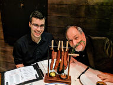
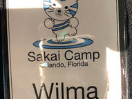
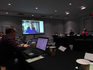

Sakai News
Social Buzz

When students review each other’s papers, the quality of their work improves dramatically, according to pedagogy expert Joe Hirsch....
Mar 10, 20191 min read

One of the joys of Sakai Camp is the opportunity to spend time networking and socializing with of fun-loving community members....
Feb 14, 20192 min read

Sakai Camp 2019 was held at a new location - The Holiday Inn Disney Springs. This venue is walking distance to the (literally!) hundreds...
Feb 14, 20191 min read

For Sakai Camp 2019, we decided to do something a little different with regard to remote attendees. We know that not everyone is able to...

While most of the North braced for record-breaking frigid temperatures, a small but mighty group of Sakaigers traveled South to meet up...